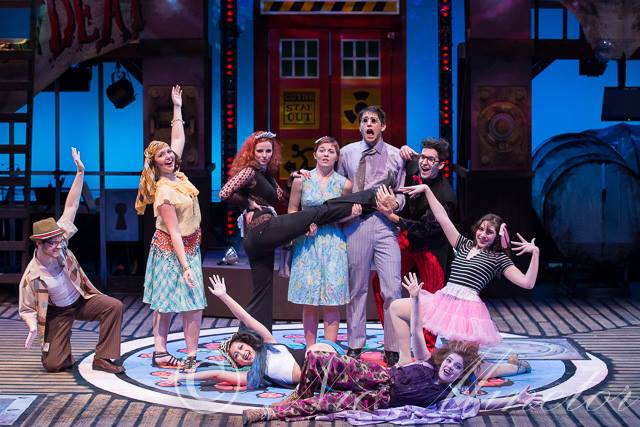

<h3> 
  <section class="wrapper alt style2">
	  <h1> UNDER CONSTRUCTION </h1>
	  
		<ul class="inline-list" style="margin-top:-1em;">
			{% for post in site.posts %}
			<a href="{{ post.url }}">
			<section class="spotlight">
				<div class="image"></div><div class="content">
				<h2> {{post.title}}</h2>
				<p> {{post.shortdescription}} </p>
								
			</div>
			</section>
			</a>
			{% endfor %}
		</ul>
	  
	  
	  					<!-- ProtoPlant -->
	  					
	  					<!-- ALGAE -->
						<section class="spotlight">
							<div class="image"></div><div class="content">
								<h2>The Open-Algae Project</h2>
								<p>Join me in my effort to feed the planet...</p>
								<a href="url">link text</a>
							</div>
						</section>
	
	  					<section class="spotlight">
							<div class="image"><iframe width="560" height="315" src="https://www.youtube.com/embed/lGo0wV_8Hxw" frameborder="0" allow="accelerometer; autoplay; encrypted-media; gyroscope; picture-in-picture" allowfullscreen></iframe><div class="content">
								<h1>Pacif-I.O.T.</h1>
								<h2>RIT Senior Design, 2018</h2>
								<p>An IOT baby jumper</p>
							</div>
						</section>
   
						<!-- Packaging Process -->
						<section class="spotlight">
							<div class="image"></div><div class="content">
								<h1>Fluid Reagent Packaging Process Project</h1>
								<h2>Toolbox Medical Innovations, 2017</h2>
								<p>The most complex project that I got paid to complete so far!</p>							
								<a href="url">link text</a>
							</div>
						</section>
							
						<!-- Stone Retaining Wall -->	
							<div class="image"></div><div class="content">
								<h1>"Natural" Stone retaining wall</h1>
								<h2>Completed for my Dad, 2015</h2>
								<p>Major innovations: a 3 layer construction with rebar and breezeblocks as the rear layer, runner-crush as the middle layer, and natural laid stone with cement behind. Essentially destruction proof. </p>							
								<a href="https://www.coroflot.com/DavidMartellock/Natural-Stone-Retaining-Wall"</a>
							</div>
						<!-- Eagle project -->
							
						<!-- NAVI -->
							
							
						<!-- Robot arm project -->
						<section class="spotlight">
							<div class="image"><iframe width="560" height="315" src="https://www.youtube.com/embed/g8HPxGCED_o" frameborder="0" allow="accelerometer; autoplay; encrypted-media; gyroscope; picture-in-picture" allowfullscreen></iframe></div><div class="content">
								<h1>Remote Controlled Robot Arm Project</h1>
                						<h2>PTLW, Cazenovia high school, 2010</h2>
								<p>I built a robot arm with an xbox controller and webcam mounted on it. Pictured picking up a fork and feeding my friend lemon merangue pie.</p>
							  
              </div>
						</section>
    
    
    
    
					</section>


  
  
</h3>

